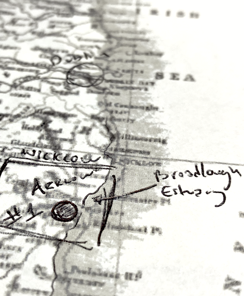

|
The Battle of Mag Itha |
||
Summary
A project to create a custom campaign in the Warcraft game engine based on the First Battle of Ireland, according to Irish mythology. This custom scenario was created in a 3rd party map editing tool for Warcraft: Orcs & Humans. Skills ¬ Project Planning |
ScenarioI played Warcraft 2 first, but wanted to start with the original. The sequel has a full map editor; the original only has a unit stats editor. Luckily, someone (BJ Pollard) has reverse engineered how the map files work and created an editor. It took a little work to getting used to the 3rd party tool, but overall it's exactly what I was hoping for.Overview For my custom map, I chose to recreate the Battle of Mag Itha, the first battle of Ireland. This story comes from Irish mythology, and in it, the ancient Irish are said to have come from the south and encountered the Fomorians. The Fomorians were a supernatural race seen as agressive and monstrous. They represent darkness, chaos, and death. |
|
I found maps of where it's believed this myth takes place, and used this as the basis for the maps' geography. The locations are aproximations as the locations are described like "an area between Lough Erne, County Fermanagh and the Drowes in County Donegal. It is close to Dernish Island, County Sligo, a possible location of the island of the Fomorians." |
 |
|
In the second map, you represent a follower of Partholón, Ith. You travel north of the Lower Lough Erne, toward the border of Fermanagh and Donegal. You intend to clear a plain in order to raise oxen, plough fields, and grow crops. However, you will come across the Fomorians as you move further northward. |
||